| Integrantes | Angela María Cruz Cifuentes (2600447) Carlos Fernando Villatoro López (2600094) Angel Kaled Rodriguez Soc (2600100) |
| Catedrático | Erik Arnulfo Santizo Bardales |
| Fecha | 10 de octubre de 2026 |
El presente manual describe el uso del Sistema de gestión de biblioteca, una aplicación web desarrollada como Proyecto Integrador de la asignatura Programación II. El sistema permite administrar el catálogo de libros, los usuarios de la biblioteca, los préstamos, las devoluciones, las multas por atraso y la emisión de reportes.
El documento está dirigido al personal de la biblioteca que opera el sistema. Cada sección corresponde a un módulo de la aplicación e indica su propósito, los datos que muestra y los procedimientos que el usuario puede realizar. Las capturas de pantalla incluidas fueron obtenidas de la aplicación en funcionamiento con los datos de prueba incluidos en el proyecto.
La aplicación se ejecuta en un servidor local y se utiliza desde un navegador web. Para su uso se requiere un navegador actualizado y conexión a internet, dado que los estilos y la tipografía de la interfaz se cargan desde servicios externos.
Una vez iniciada la aplicación, se accede introduciendo en la barra de direcciones del navegador la dirección indicada por el servidor, que por defecto es http://localhost:5110. El sistema abre directamente en la pantalla de inicio y no solicita credenciales de autenticación.
Los datos se conservan en archivos del propio sistema, por lo que los cambios realizados permanecen disponibles al cerrar y volver a abrir la aplicación.
Todas las pantallas comparten la misma estructura. En el costado izquierdo se encuentra el menú de navegación, agrupado en tres bloques: Inicio; los procesos diarios (Préstamos, Devoluciones y Multas); y la administración de datos (Libros y Usuarios), seguidos de Reportes. La opción correspondiente a la pantalla actual aparece resaltada.
En la parte superior del área de contenido se muestra el título de la pantalla y una breve descripción de su función. Debajo se ubican, según el módulo, las pestañas de filtro, el campo de búsqueda y el botón de acción principal, seguidos del listado de registros.
Las acciones que modifican información solicitan una confirmación previa mediante un cuadro de diálogo. Tras completar una operación, el sistema muestra un mensaje que informa del resultado.
La pantalla de inicio presenta un resumen del estado de la biblioteca y permite acceder rápidamente a las operaciones más frecuentes.
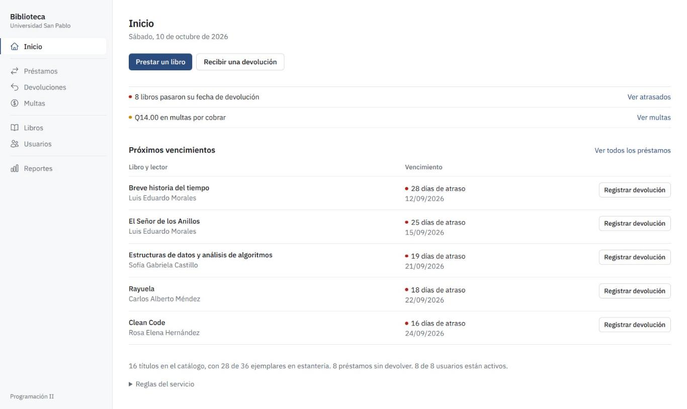
Contiene los siguientes elementos:
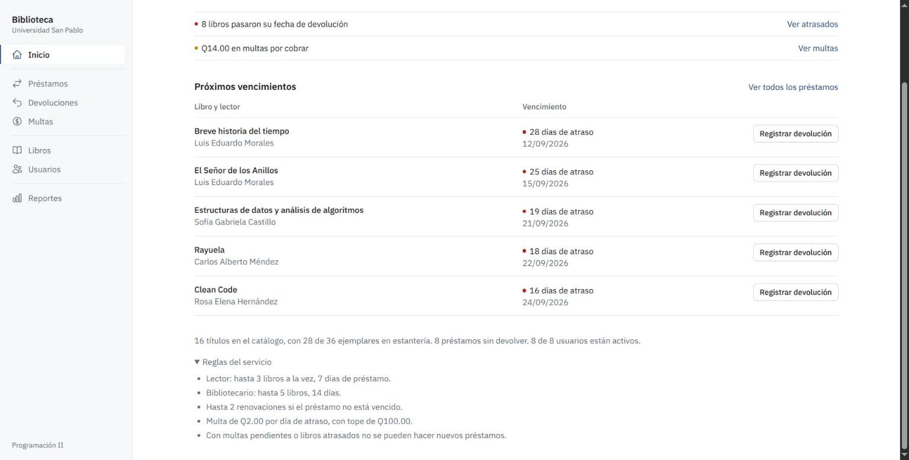
Este módulo administra el catálogo de la biblioteca. Se accede mediante la opción Libros del menú.
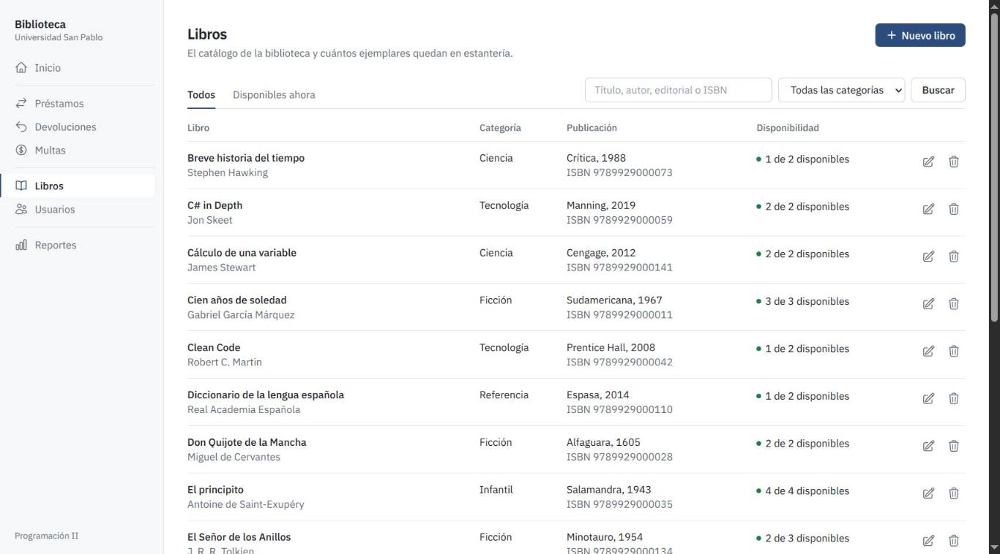
El listado muestra, para cada libro, el título y el autor, la categoría, la editorial con el año de publicación y el ISBN, y la disponibilidad expresada como ejemplares disponibles sobre el total. Las pestañas Todos y Disponibles ahora filtran el listado según la existencia de ejemplares en estantería.
El campo de búsqueda localiza libros por título, autor, editorial o ISBN, y el selector de categorías restringe el resultado a una clasificación determinada. Ambos criterios se aplican al presionar el botón Buscar.
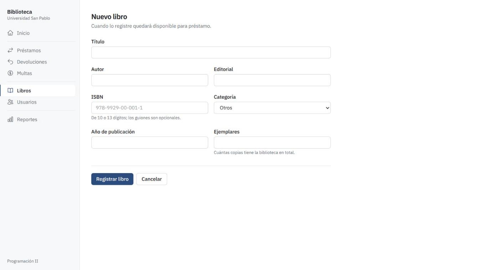
El botón Nuevo libro abre el formulario de registro. Deben completarse los siguientes campos:
| Campo | Descripción |
|---|---|
| Título | Nombre de la obra. |
| Autor | Autor o autores de la obra. |
| Editorial | Casa editorial que publica la obra. |
| ISBN | Código de 10 o 13 dígitos; los guiones son opcionales. No puede repetirse entre libros. |
| Categoría | Clasificación del libro, seleccionada de una lista. |
| Año de publicación | Año en que fue publicada la obra. |
| Ejemplares | Cantidad total de copias que posee la biblioteca. |
Al presionar Registrar libro, el libro queda disponible para préstamo. El botón Cancelar regresa al listado sin guardar cambios.
Cuando faltan datos obligatorios o alguno no es válido, el sistema no guarda el registro. En su lugar se muestra, en la parte superior, un cuadro con la lista de errores, y cada campo afectado se resalta con un mensaje junto a él. El usuario debe corregir los datos y volver a enviar el formulario.
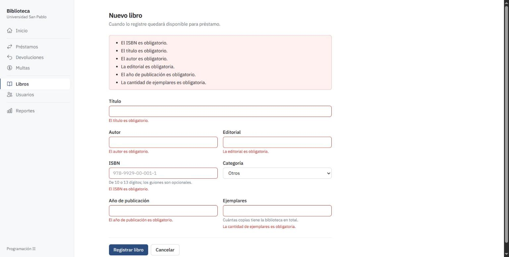
En cada fila del listado, el ícono de lápiz abre el formulario de edición con los datos actuales del libro, que pueden modificarse y guardarse. El ícono de papelera solicita confirmación y elimina el libro del catálogo. Un libro que tiene préstamos registrados en su historial no puede eliminarse; el sistema lo indica con un mensaje.
Este módulo administra a las personas que pueden solicitar libros. Existen dos tipos de usuario, lector y bibliotecario, que difieren en los límites de préstamo. Se accede mediante la opción Usuarios del menú.
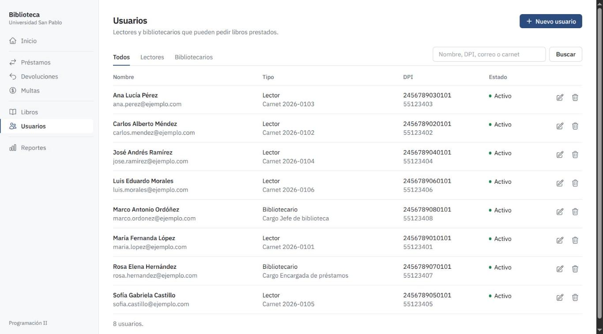
El listado presenta el nombre y el correo electrónico, el tipo de usuario con su carnet o cargo, el DPI y el teléfono, y el estado (activo o inactivo). Las pestañas Todos, Lectores y Bibliotecarios filtran por tipo. El campo de búsqueda localiza usuarios por nombre, DPI, correo o carnet.
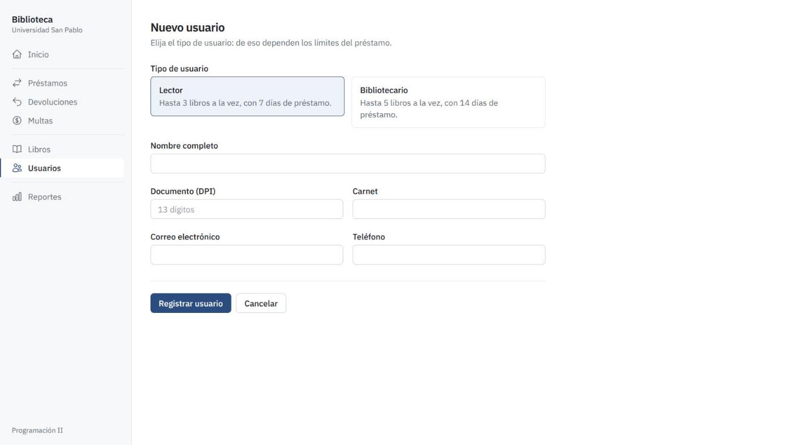
El botón Nuevo usuario abre el formulario. En primer lugar se elige el tipo de usuario, ya que de este dependen los límites del préstamo: el lector puede tener hasta 3 libros a la vez con 7 días de préstamo, y el bibliotecario hasta 5 libros con 14 días. Después se completan el nombre completo, el documento de identificación (DPI) de 13 dígitos, el carnet, el correo electrónico y el teléfono.
Al presionar Registrar usuario el nuevo usuario queda habilitado. Las reglas de validación operan igual que en el módulo de libros; además, el DPI y el carnet no pueden repetirse entre usuarios.
El ícono de lápiz permite modificar los datos de un usuario. En el formulario de edición, la casilla Usuario activo determina si la persona puede pedir libros prestados; al desmarcarla, el usuario se conserva en el sistema pero no puede realizar nuevos préstamos. El ícono de papelera elimina al usuario previa confirmación, siempre que no tenga préstamos ni multas en su historial; de lo contrario el sistema lo impide, y en ese caso se recomienda desactivarlo.
Este módulo registra los libros que salen de la biblioteca y permite conocer quién los tiene y cuándo deben volver. Se accede mediante la opción Préstamos del menú.
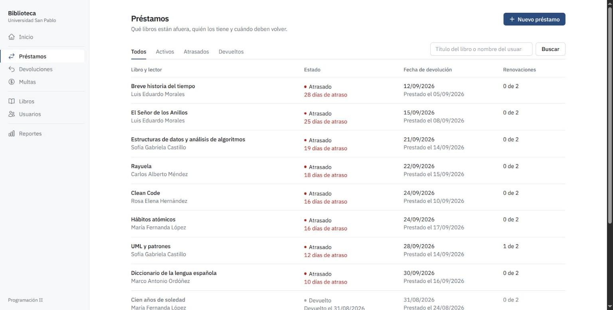
Cada fila muestra el libro y el lector, el estado del préstamo (activo, atrasado o devuelto), la fecha de devolución junto con la fecha en que se realizó el préstamo, y el número de renovaciones utilizadas sobre el máximo permitido. Los préstamos atrasados indican además los días de atraso. Las pestañas Todos, Activos, Atrasados y Devueltos filtran el listado, y el campo de búsqueda localiza por título del libro o nombre del usuario.
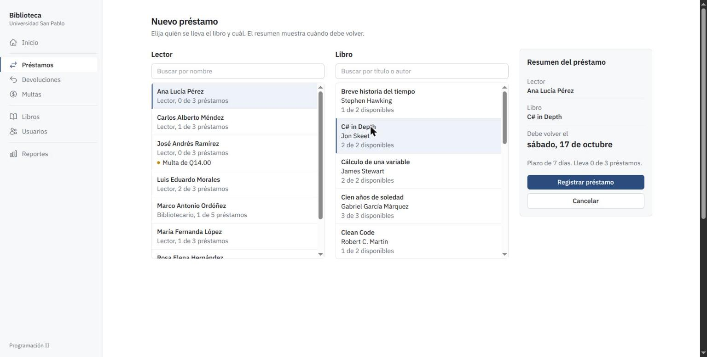
El botón Nuevo préstamo abre una pantalla dividida en dos listas y un resumen:
Si el lector tiene multas pendientes, libros atrasados o ha alcanzado su límite de préstamos, el sistema rechaza la operación e informa el motivo.
En los préstamos activos se dispone del botón Renovar, que extiende la fecha de devolución tras confirmar la acción. Cada préstamo admite hasta dos renovaciones y solo puede renovarse mientras no esté vencido; en caso contrario, la fila indica que ya no se puede renovar.
Este módulo permite registrar la entrega de los libros que permanecen fuera de la biblioteca. Se accede mediante la opción Devoluciones del menú o desde el acceso directo de la pantalla de inicio.
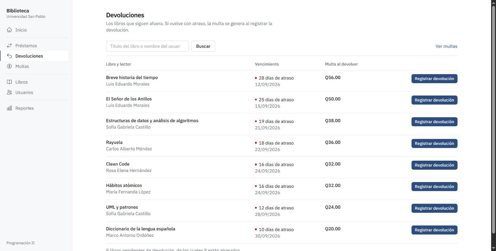
El listado contiene únicamente los préstamos sin devolver. Para cada uno se muestran el libro y el lector, el vencimiento con los días de atraso y la multa que se generará al devolverlo. El campo de búsqueda localiza por título o usuario, y el enlace Ver multas conduce al módulo correspondiente.
Para registrar una devolución se presiona Registrar devolución en la fila del préstamo y se confirma la acción. El sistema marca el préstamo como devuelto, repone el ejemplar a la estantería y, si la entrega es posterior al vencimiento, genera automáticamente la multa. Al pie del listado se informa cuántos libros están pendientes y cuántos de ellos se encuentran atrasados.
Este módulo concentra las multas generadas por devolver libros con atraso y permite registrar su cobro. Se accede mediante la opción Multas del menú.
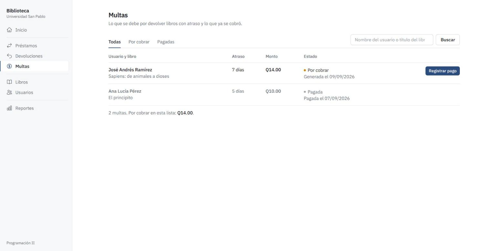
Cada fila presenta al usuario y el libro, los días de atraso, el monto y el estado de la multa. Una multa por cobrar indica la fecha en que fue generada y ofrece el botón Registrar pago; una multa pagada indica la fecha de cobro. Las pestañas Todas, Por cobrar y Pagadas filtran el listado, y el campo de búsqueda localiza por nombre del usuario o título del libro. Al pie se muestra la cantidad de multas y el total por cobrar de la lista.
El monto se calcula a razón de Q2.00 por cada día de atraso, con un tope de Q100.00 por préstamo. Mientras un usuario tenga una multa por cobrar no podrá realizar nuevos préstamos; al registrar el pago queda habilitado nuevamente.
Este módulo genera listados de consulta sobre la información de la biblioteca. Se accede mediante la opción Reportes del menú.
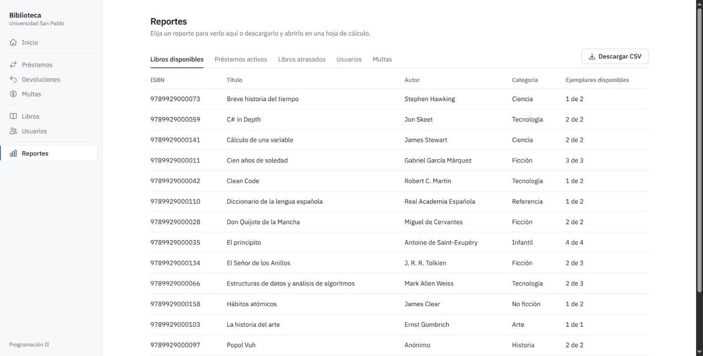
Los reportes disponibles, seleccionables mediante las pestañas superiores, son:
| Reporte | Contenido |
|---|---|
| Libros disponibles | Libros con ejemplares en estantería: ISBN, título, autor, categoría y ejemplares disponibles. |
| Préstamos activos | Préstamos vigentes aún no devueltos. |
| Libros atrasados | Libros cuya fecha de devolución venció, con los días de atraso y la multa estimada. |
| Usuarios | Relación de lectores y bibliotecarios registrados. |
| Multas | Multas generadas, con su estado y monto. |
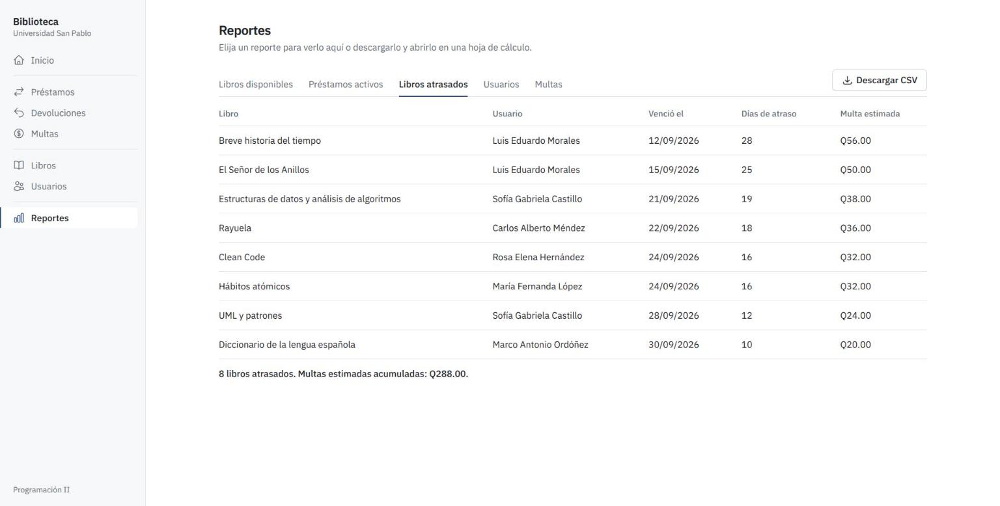
Cada reporte incluye una línea de resumen con los totales. El botón Descargar CSV exporta el reporte que se está visualizando a un archivo que puede abrirse en una hoja de cálculo.
El sistema aplica de forma automática las siguientes reglas, que el usuario debe tener presentes al operar los módulos de préstamos, devoluciones y multas.
| Concepto | Regla |
|---|---|
| Préstamos de un lector | Hasta 3 libros a la vez, con un plazo de 7 días. |
| Préstamos de un bibliotecario | Hasta 5 libros a la vez, con un plazo de 14 días. |
| Renovaciones | Hasta 2 por préstamo, siempre que el préstamo no esté vencido. |
| Multa por atraso | Q2.00 por cada día de atraso, con un tope de Q100.00. |
| Restricciones | Un usuario con multas pendientes o con libros atrasados no puede realizar nuevos préstamos. |
| Disponibilidad | Solo pueden prestarse libros con al menos un ejemplar en estantería. |
Ante una operación que incumple una regla, el sistema presenta un mensaje descriptivo y no modifica los datos. Los casos más habituales son los siguientes:
Se recomienda, como buenas prácticas de uso: verificar el resumen del préstamo antes de confirmarlo; registrar las devoluciones el mismo día en que ocurren, para que la multa se calcule correctamente; y consultar periódicamente los reportes de libros atrasados y de multas para dar seguimiento a los usuarios con pendientes.